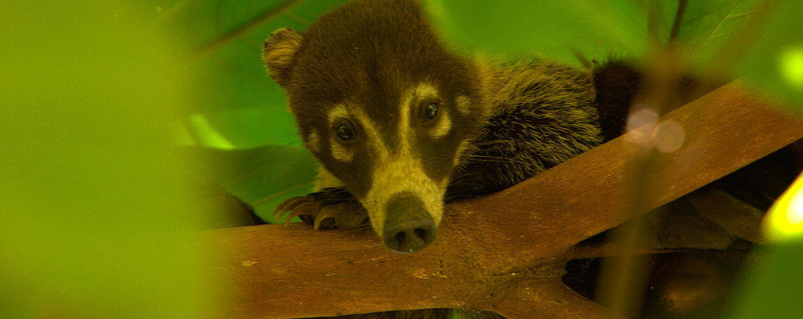
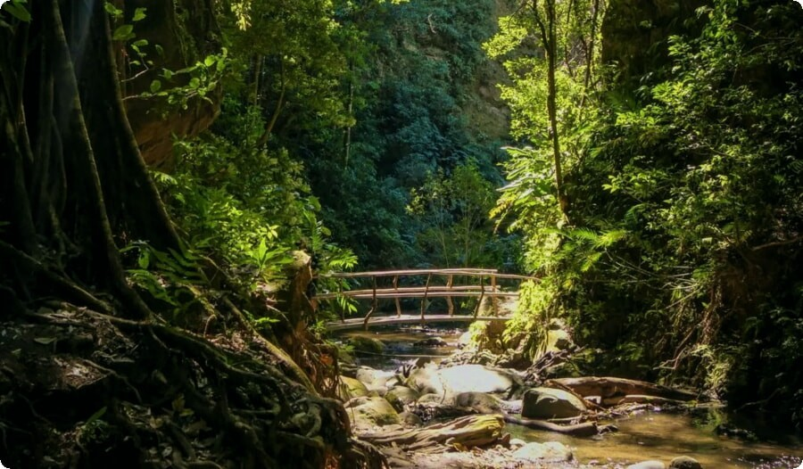

Últimas noticias
Aquí puedes mostrar titulares breves y enlaces.
Eventos y actividades
Promociona eventos de turismo sostenible.
Sección Noticias
Noticia 1
Resumen.
Noticia 2
Resumen.
Noticia 3
Resumen.
SINAC